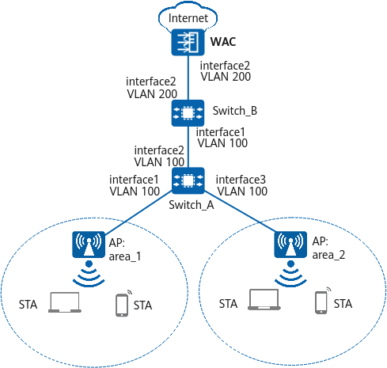

Example for Configuring Smart Roaming
Networking Requirements
A STA accesses the network through a WLAN. When the STA moves, it is required to associate with the nearest AP to achieve optimal user experience. Furthermore, users' services are not affected during STA roaming in the coverage area.
Basic configurations for WLAN STA access have been completed. For details, see "Configuration Examples for WLAN STA Management" in CLI Configuration Guide > WLAN Configuration > WLAN STA Management Configuration.

In this example, interface1, interface2, and interface3 represent 10GE0/0/1, 10GE0/0/2, and 10GE0/0/3, respectively.

Item |
Data |
|---|---|
RRM profile |
|
2.4 GHz radio profile |
|
5 GHz radio profile |
|
Procedure
- Check basic WLAN configurations.
Check Item
Command
Data
AP group to which an AP belongs
display ap all
AP group: ap-group1
All profiles bound to the AP group
display ap-group name ap-group1
VAP profile: wlan-net
All profiles bound to the VAP profile
display vap-profile name wlan-net
SSID profile: wlan-net
- Configure smart roaming.
# Create the RRM profile wlan-rrm, enable smart roaming in the RRM profile, configure the SNR-based roaming trigger mode, and set the roaming threshold to 15 dB.
<HUAWEI> system-view [HUAWEI] sysname WAC [WAC] wlan [WAC-wlan] rrm-profile name wlan-rrm [WAC-wlan-rrm-prof-wlan-rrm] undo smart-roam disable [WAC-wlan-rrm-prof-wlan-rrm] smart-roam roam-threshold snr 15 [WAC-wlan-rrm-prof-wlan-rrm] quit
# Create the 2.4 GHz radio profile wlan-radio2g and bind the RRM profile wlan-rrm to the 2.4 GHz radio profile.
[WAC-wlan] radio-2g-profile name wlan-radio2g [WAC-wlan-radio-2g-prof-wlan-radio2g] rrm-profile wlan-rrm Warning: This action may cause service interruption. Continue? [Y/N]:y [WAC-wlan-radio-2g-prof-wlan-radio2g] quit
# Create the 5 GHz radio profile wlan-radio5g and bind the RRM profile wlan-rrm to the 5 GHz radio profile.
[WAC-wlan] radio-5g-profile name wlan-radio5g [WAC-wlan-radio-5g-prof-wlan-radio5g] rrm-profile wlan-rrm Warning: This action may cause service interruption. Continue? [Y/N]:y [WAC-wlan-radio-5g-prof-wlan-radio5g] quit
# Bind the 5 GHz radio profile wlan-radio5g and 2.4 GHz radio profile wlan-radio2g to the AP group ap-group1.
[WAC-wlan] ap-group name ap-group1 [WAC-wlan-ap-group-ap-group1] radio-5g-profile wlan-radio5g radio 1 Warning: This action may cause service interruption. Continue? [Y/N]:y [WAC-wlan-ap-group-ap-group1] radio-2g-profile wlan-radio2g radio 0 Warning: This action may cause service interruption. Continue? [Y/N]:y [WAC-wlan-ap-group-ap-group1] quit
Verifying the Configuration
# Run the display rrm-profile name wlan-rrm command on the WAC to check the smart roaming configuration.
[WAC-wlan] display rrm-profile name wlan-rrm -------------------------------------------------------------------- ... Smart-roam : enable ... Smart-roam standing SNR threshold(dB) : 15 ... --------------------------------------------------------------------
# When a large number of STAs connect to the network, they can still have good network experience.
Configuration Scripts
WAC
# sysname WAC # wlan rrm-profile name wlan-rrm smart-roam roam-threshold snr 15 radio-2g-profile name wlan-radio2g rrm-profile wlan-rrm radio-5g-profile name wlan-radio5g rrm-profile wlan-rrm ap-group name ap-group1 radio 0 radio-2g-profile wlan-radio2g radio 1 radio-5g-profile wlan-radio5g # return